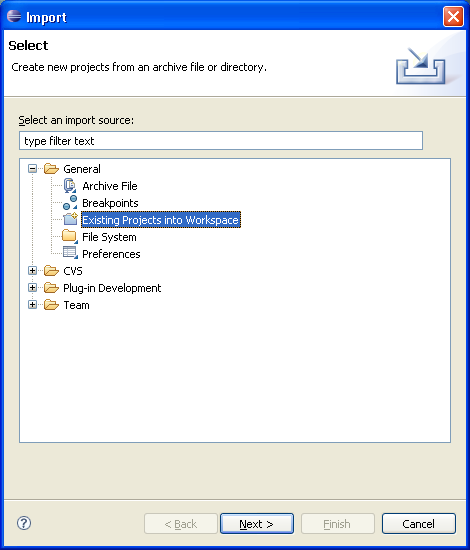
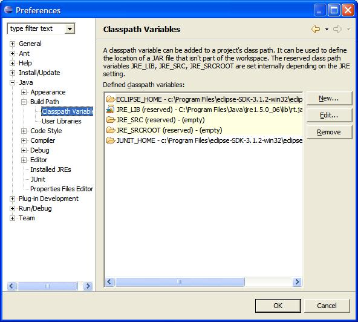

Introduction
This document will guide you through importing ServiceMix 3.0 into the IDE Eclipse Java Development Tools v3.x.
v3.x.
Pre-Installation Requirements
Hardware:
- Around 25 MB of free disk space for the ServiceMix 3.x sources.
- Roughly 250 MB of free disk space for the complete build (Eclipse plugin and ServiceMix binaries) produced by Maven and further 200 MB for the dependencies Maven downloads during building. As a lot of small files are produced, the exact space demands depend greatly on your cluster utilisation ratio.
Operating Systems:
- Windows: Windows XP SP2, Windows 2000.
- Unix: Ubuntu Linux, Powerdog Linux, MacOS, AIX, HP-UX, Solaris, any Unix platform that supports Java.
Environment:
- Java Developer Kit (JDK) 1.5.x (Java 5) for compiling/building.
- The JAVA_HOME environment variable must be set to the directory where the JDK is installed, e.g., c:\Program Files\jsdk.1.5.x
- Maven 2.0.4 or greater.
- Eclipse 3.x or greater.
Importing ServiceMix
Below are the steps to import ServiceMix as a project in Eclipse.
Preparing the Files for Eclipse
- Grab the sources from svnor download servicemix source distribution.
- Open a command line and change to the source root folder. Execute the following Maven 2 command to ready the project for Eclipse. It will take around two minutes.
In case you did never use Maven before and get errors stating that some plugins or the like are missing, like for example:
[INFO] Searching repository for plugin with prefix: 'eclipse'.
Downloading: http:[WARNING] Unable to get resource from repository central (http:[INFO] ------------------------------------------------------------------------
[ERROR] BUILD ERROR
[INFO] ------------------------------------------------------------------------
[INFO] Plugin could not be found - check that the goal name is correct: Unable to download the artifact from any repository
execute the commands stated under "Build ServiceMix..." in the chapters Windows / Unix source installation:
mvn -Dprofile=step1
mvn -Dprofile=step2
and then retry.
In Eclipse:
- From the "File" menu select "Import".

- Select "Existing Projects into Workspace" and click "Next"

- Browse for the root directory, which is the directory in which you downloaded ServiceMix. "Select All" the files in the Import pop-up window. They are probably already pre-selected for you (check box is checked). Un-checking the option "Copy projects into workspace" allows you to automatically always edit the current version of the SVN checkout folder, thus avoiding an import after each SVN update. Click "Finish" in the Import window; the import takes around three minutes.

- From the "Windows" menu and click "Preferences"
The Preferences window will pop-up.
Click on the "Java" plus sign and change to "Compiler".
Compiler compliance level must be 5.0, pull down menu and select.
Check the "Use default compliance settings" box.

- Then check under "Installed JREs" that you have JDK 5, e.g., jre_1.5.x

- Click on "Build Path" and then select "Classpath Variables".

- Click on "New" button to right
A pop-up appears.
Enter the Name: M2_REPO
Enter the Path of your local maven repository, usually located in <your home directory>\.m2, for example:
C:\Documents and Settings\exjobb\.m2\repository

- Click "OK" button. The necessary build takes around three minutes.
Running an Example
Now you can run an example:
- In the Package Explorer find the Main class, which should be located in: servicemix-core/src/main/java/
under org.apache.servicemix/Main.java.
Double click on the main() method.

- From the Run menu select "Run..."

- You will get a Run window pop-up, from there select Java Application.
- Click on New button in botton left (Eclipse <3.2) or the icon in the top left (Eclipse v3.2)
- Name the Project: any name you like, for example if you want to run the FilePoller / FileBinding application call it "filepoller", so it's easy for you to remember what this run configuration does.
- Click on "Arguments" tab:
- In the "Program Arguments" box enter servicemix.xml
- In the Working Directory enter the path of your example. Such as
S:\apache-servicemix\src\main\release\examples\file-binding
where S:\ is assumed as your servicemix root directory.
You can use the "File System..." button to browse for your directory.

- Click on the tab "Classpath" to give Eclipse needed information on where to search for executable files. This description sticks to the file-binding example, but a similar procedure will be needed for most examples and your own code as well. There are three main ways to add classes to the classpath:
- You can add other projects of the workbench. Doing this will make the file-binding example run.
- Click "User Entries"
- Click "Add Projects" and click the checkbox(es) in front of the project(s) that are required. For convenience reasons you may click "Select All".

- Click "OK". Now your Run-dialog shall look similar to this screenshot:

- You can add JARs and classes that are stored within a classpath environment variable. This is not required for the file-binding example, but possible, e.g. if you want to run a specific ServiceMix version from a JAR for bug reproduction or the like - this case is used for the following description. Often, this way is used to reference depenedencies Maven downloads automatically for you.
- Click "User Entries"
- Click "Advanced", "Add Classpath Variables" and "OK"

- Check M2_REPRO and click "Extend"

- Choose the JAR containing the bytecode for the missing classes. If you want to run SOME_VERSION of ServiceMix, choose /org/apache/servicemix/servicemix-core/SOME_VERSION/servicemix-core-SOME_VERSION.jar
In case you want to reference a dependency, proceed in the same way. In case you do not know which package you shall select, see below.

- Click "OK"
- You can add arbitrary folders to the classpath. This is usually only needed for your own code. To explain the workflow, let's assume you did not add any projects, thus your file-binding example does not run and the console window contains this message:
- Click "User Entries"
- Click "Advanced", "Add External Folder" and "OK"

- When S:\ is your servicemix root directory, select/enter
S:\servicemix-components\target\classes
Why this directory? Well, have a closer look at the error message presented above. The package org.apache.servicemix.components indicates the location of the missing bean FileWriter is servicemix-components, and as we need an executable file, the target\classes subdirectory is where to look. Of course we shall proof that FileWriter really is located here, so execute dir /s FileWriter.class in the given directory and watch the output.

- Click "OK".
- Click Apply.
- Click Run.
Troubleshooting
One or two lines of error messages
In case you see an error message like
in the console window, the ServiceMix class (or xbean or whatever is stated) file is not found. Did you add the class files to the classpath like stated above (see "Add Projects")? In case you did, there may not exist any class files as they were not yet built. You can do that by executing
in the source's root directory. This will take roughly 10 to 15 minutes. Maybe you prefer to reference a binary distribution (see "Add Classpath Variables" above).
Lengthy error messages (stack trace)
Scan the messages in the console window from top to bottom until you find one stating a missing component, indicated by a package name - in case it's a "java.lang.NoClassDefFoundError" or "java.lang.ClassNotFoundException", the missing class is printed directly after that error string, whereas for instance "Error creating bean with name" is demanding slightly more search.
Messages may look like one of the following
or
First extract the package name from the error message, so org.apache.servicemix.components respectivly org.quartz for the above examples.
Now, you have to choose the appropriate procedure:
- Build the class / project. See "One or two lines of error messages" above.
- Add the required library to the classpath like stated above for "Add Classpath Variables". Look in the Maven repository for a folder matching the missing package. Sometimes the top level domain (org, com, de and the like) is omitted, so package org.quartz may be placed in folder quartz. Then choose a JAR containing executable bytecode classes, so not the quartz-1.5.1-sources.jar but quartz-1.5.1.jar
- Add the required library to the classpath like stated above for "Add External Folder". The package indicates the location of the missing bean FileWriter is servicemix-components, and as we need an executable file, the target\classes subdirectory is where to look. Of course we shall proof that FileWriter really is located here, so execute dir /s FileWriter.class in the given directory and watch the output.
Redo this until no class/JAR is missing any more.